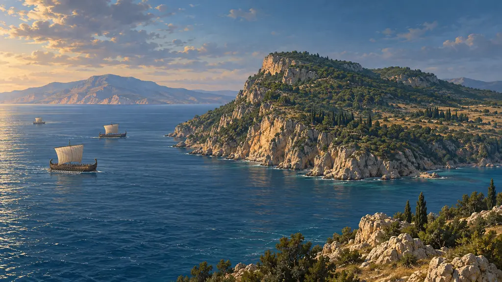
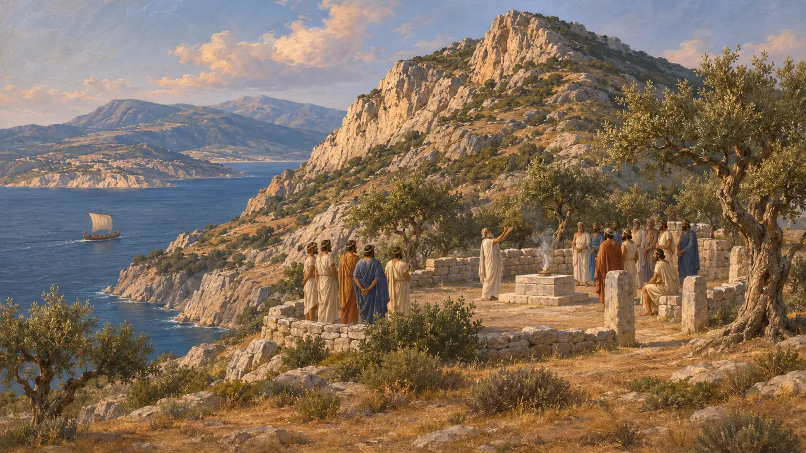
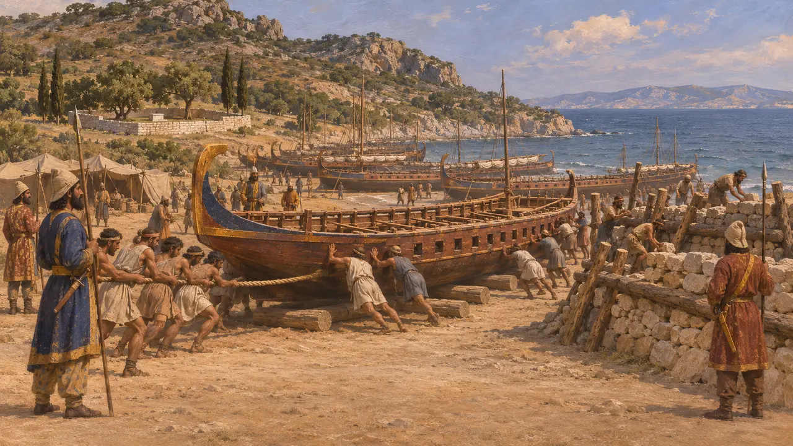
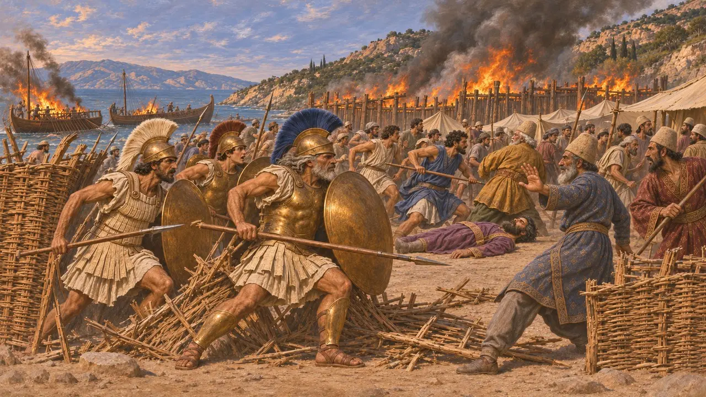
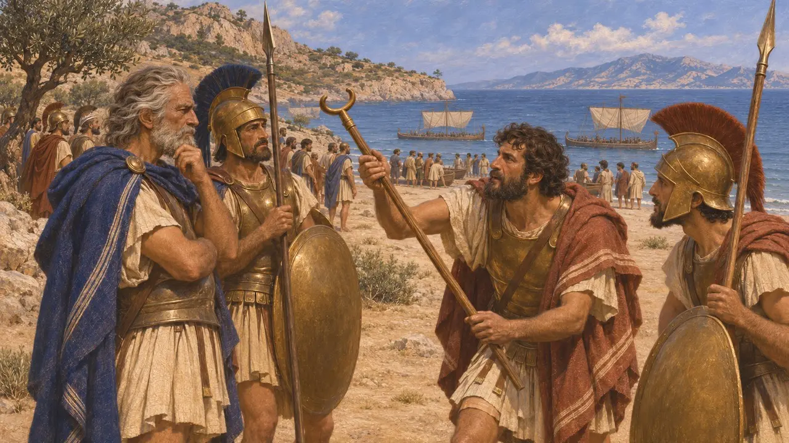
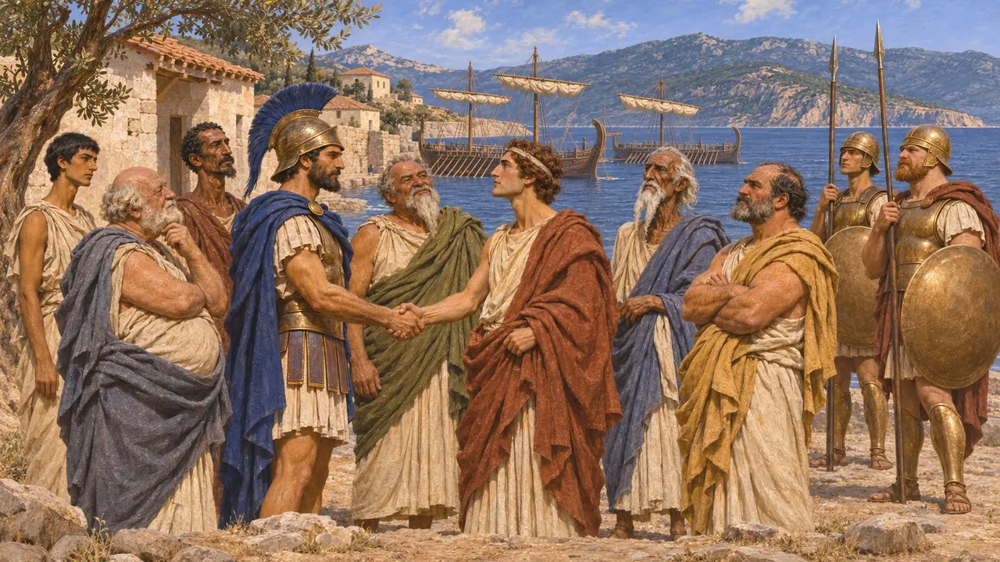

米卡勒是爱奥尼亚沿岸一处多山的岬角，与萨摩斯岛隔海相望。公元前479年，波斯舰队的残部被拖上岸，由一支陆军守卫，而列奥提基德斯和克桑西普斯率领的希腊舰队强攻营地，焚毁了战船。这场失败为爱奥尼亚诸城脱离国王的统治打开了道路。
游戏中： 米卡勒是本游戏公元前479年的尾声。其编年史注释依据希罗多德的记载，讲述了船营遭强攻、舰队被焚毁的经过。称此事与普拉提亚战役发生在同一天，乃是希罗多德的说法，史学家对此存疑。

岬角与泛爱奥尼亚圣所
古代记述米卡勒从海中陡然拔起，隔着一道狭窄的海峡与萨摩斯相对。希罗多德说，泛爱奥尼亚圣所就位于其北侧，那是爱奥尼亚十二城聚会共庆赫利孔波塞冬节的圣地。这座岬角既是水手的航标，也是爱奥尼亚人的聚会之所，而日后正是这些爱奥尼亚人在此分属两方交战。
Herodotus 1.148

波斯舰队登岸
古代记述据希罗多德记载，萨拉米斯之战后，残存的舰队于公元前479年春集结于萨摩斯，连同爱奥尼亚人在内约有300艘战船。希腊人从提洛岛驶来时，舰队统帅遣走了腓尼基战船，将其余船只拖上米卡勒的海岸，靠近厄琉息斯得墨忒耳的圣域。他们以石块和伐倒的树木筑起壁垒，由提格拉涅斯统率的陆军守卫；希罗多德称这支陆军有60,000人，这一数字恐怕偏高。
Herodotus 8.130; 9.96-97

攻占营地
古代记述希罗多德记载，列奥提基德斯先沿海岸航行，呼吁爱奥尼亚人铭记自由。波斯人对他们心存疑虑，于是解除了萨摩斯人的武装，并派米利都人去把守山路。雅典人及在海滩上与他们并肩作战的部队冲破了柳条盾垒成的屏障，攻入营地，提格拉涅斯战死。萨摩斯人和其他爱奥尼亚人随即倒戈攻击波斯人，希腊人焚毁了舰船和壁垒。
Herodotus 9.98-106

与普拉提亚同日
争夺中希罗多德称普拉提亚与米卡勒两战发生在同一天，且波奥提亚大捷的消息在进攻前便已传到希腊人耳中，海滩上还发现了一根传令官的权杖。狄奥多罗斯则说是列奥提基德斯编造了这一消息以鼓舞士气。史家公认两战都发生在公元前479年夏末，但对两者的确切关联存疑，而希罗多德将其视为神明的征兆。没有任何波斯文献提及此战。
Herodotus 9.100-101; Diodorus 11.35

爱奥尼亚叛离
古代记述希罗多德称米卡勒之战为爱奥尼亚第二次背离波斯。在萨摩斯，伯罗奔尼撒人提议将爱奥尼亚人迁往希腊本土，但雅典人拒绝了；于是萨摩斯人、希俄斯人、莱斯沃斯人以及其他岛民加入了希腊同盟。舰队随后驶往赫勒斯滂，克桑西普斯与雅典人在那里围攻塞斯托斯。
Herodotus 9.104-106; 9.114-121
来源
- Herodotus, Histories 9.90-106
- Herodotus, Histories 8.130; 9.114-121
- Diodorus Siculus 11.34-37
- J. F. Lazenby, The Defence of Greece 490-479 BC, 1993
- P. Briant, From Cyrus to Alexander, 2002
- P. Green, The Greco-Persian Wars, 1996